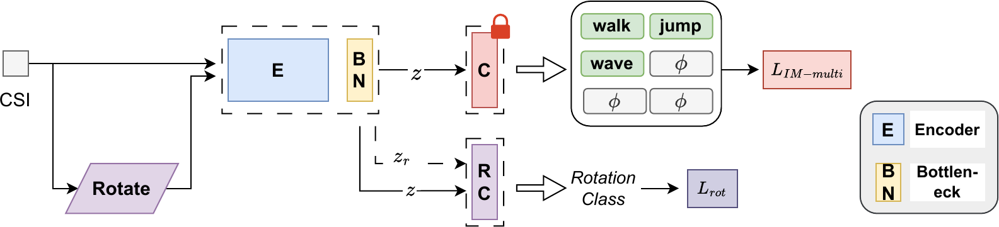
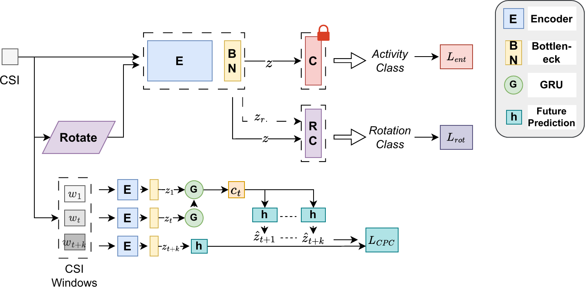
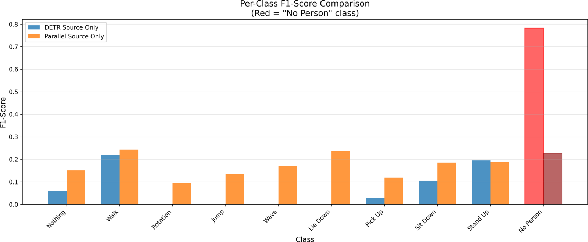

1 Department of Electrical Engineering and Computer Science, York University, Toronto, ON, Canada
IEEE Internet of Things Journal, 2026
A single source-free framework that adapts Wi-Fi CSI activity recognition to new environments using only unlabeled target data, combining occupancy-weighted information maximization with rotation-based self-supervision for both single- and multi-user sensing.

Deep learning is widely adopted for Wi-Fi CSI-based human activity recognition (HAR) because it learns spatio-temporal features in a privacy-preserving, cost-effective manner. However, such models generalize poorly across environments — a challenge amplified in multi-user settings where overlapping activities cause CSI entanglement and domain shifts. Moreover, practical deployments often restrict access to labeled source data, motivating source-free adaptation from only unlabeled target-domain CSI and a pretrained source model.
We propose MU-SHOT-Fi, a source-free unsupervised domain adaptation (SFUDA) framework for both single- and multi-user Wi-Fi sensing. It employs permutation-invariant set prediction with Hungarian matching during source training, followed by frozen-classifier backbone adaptation in the target domain. To enable stable label-free adaptation, we introduce occupancy-weighted information maximization that prevents collapse by focusing diversity regularization on likely-occupied slots and excluding the dominant class from marginal entropy. We further use binary rotation prediction as spatial self-supervision exploiting CSI frequency–time structure.
For single-user scenarios, SU-SHOT-Fi replaces occupancy weighting with standard information maximization and adds contrastive predictive coding (CPC) to exploit temporal consistency. Across the multi-user WiMANS and single-user Widar 3.0 datasets — under cross-environment, cross-frequency, cross-orientation, and combined shifts — MU-SHOT-Fi recovers multi-user exact-activity performance under large domain shifts while maintaining accurate occupancy estimation and preventing collapse toward dominant classes.
MU-SHOT-Fi separates source training from label-free target adaptation. A pretrained source model predicts a set of activities across \(M\) slots; the target backbone is then adapted on unlabeled CSI while the classifier stays frozen.
Each multi-user CSI sample carries a vector of joint activities for up to \(M\) users, \(\tilde{\mathbf{y}} = [y_1,\ldots,\emptyset,\ldots,y_M]\), where \(\emptyset\) marks an unoccupied slot. Since users are not canonically indexed, labels are defined only up to permutation — \([\texttt{walk},\texttt{jump},\emptyset]\) and \([\texttt{jump},\texttt{walk},\emptyset]\) describe the same state. Source training therefore uses Hungarian matching to align predicted slots with ground-truth activities before computing the loss.
Standard diversity regularization treats all slots uniformly and, under heavy "no person" imbalance, collapses to empty-slot predictions. Our objective weights each slot by its estimated occupancy probability and excludes the empty class from the marginal-entropy term, enabling balanced adaptation across variable user counts.
A binary rotation-prediction head provides spatial regularization on the CSI frequency–time grid, encouraging domain-invariant features during adaptation. The head is used only at adaptation time and adds no inference-time cost.
For single users, occupancy is fixed at one activity per sample, so we drop occupancy weighting for the standard SHOT information-maximization objective and enable k-nearest-centroid pseudo-labeling (viable because single-user datasets are class-balanced). A CPC loss adds temporal consistency across CSI windows, capturing domain-invariant periodic patterns such as stride rhythms.

Evaluation on the multi-user WiMANS dataset (up to \(M{=}6\) users) and the single-user Widar 3.0 dataset, across cross-environment, cross-frequency, cross-orientation, and combined domain shifts. Values are mean ± std across 3 runs.
WiMANS: SFUDA results under three domain shifts (%, except Occupancy MAE)
| Method | Exact Match ↑ | Activity F1 ↑ | Slot Acc ↑ | Occ. MAE ↓ | Occ. Exact ↑ |
|---|---|---|---|---|---|
| Cross-Room | |||||
| Source Only | 2.12 | 15.89 | 55.09 | 1.52 | 20.45 |
| SHOT-IM | 2.82 | 24.97 | 37.12 | 2.07 | 17.99 |
| SHOT++ | 7.05 | 16.88 | 55.32 | 1.63 | 23.28 |
| MU-SHOT-Fi (Ours) | 7.76 | 17.08 | 55.29 | 1.60 | 24.61 |
| MU-SHOT-Fi + CPC | 6.34 | 16.16 | 55.43 | 1.63 | 22.75 |
| Cross-Frequency | |||||
| Source Only | 0.00 | 25.69 | 21.16 | 2.92 | 7.40 |
| SHOT-IM | 0.35 | 26.56 | 32.39 | 2.61 | 9.34 |
| SHOT++ | 0.71 | 19.61 | 47.08 | 1.89 | 15.16 |
| MU-SHOT-Fi (Ours) | 0.71 | 18.82 | 46.97 | 1.89 | 14.63 |
| MU-SHOT-Fi + CPC | 1.41 | 19.55 | 47.33 | 1.91 | 13.40 |
| Combined Shift | |||||
| Source Only | 0.00 | 24.99 | 19.61 | 3.00 | 5.99 |
| SHOT-IM | 0.00 | 23.62 | 28.63 | 2.80 | 9.17 |
| SHOT++ | 0.18 | 19.23 | 41.06 | 2.16 | 10.58 |
| MU-SHOT-Fi (Ours) | 0.18 | 18.47 | 41.97 | 2.12 | 10.93 |
| MU-SHOT-Fi + CPC | 0.18 | 18.45 | 41.58 | 2.15 | 5.99 |
| Average | |||||
| Source Only | 0.71 | 22.19 | 31.95 | 2.48 | 11.28 |
| SHOT-IM | 1.06 | 25.05 | 32.71 | 2.49 | 12.17 |
| SHOT++ | 2.65 | 18.57 | 47.82 | 1.89 | 16.34 |
| MU-SHOT-Fi (Ours) | 2.88 | 18.12 | 48.08 | 1.87 | 16.72 |
| MU-SHOT-Fi + CPC | 2.64 | 18.05 | 48.11 | 1.90 | 14.04 |
| Random Predictor | ≈0.00 | ≈11.11 | ≈10.00 | ≈5.00 | ≈1.54 |
Values in %, except Occupancy MAE. Random predictor assumes uniform predictions over \(K{+}1{=}10\) classes per slot.
Widar 3.0: SFUDA results under three domain shifts (%)
| Method | Accuracy ↑ | F1-Macro ↑ | Gain |
|---|---|---|---|
| Cross-Room | |||
| Source Only | 69.09 | 68.37 | — |
| SHOT-IM | 78.19 | 77.08 | +9.10 |
| SHOT++ | 79.16 | 77.97 | +10.07 |
| SU-SHOT-Fi (Ours) | 79.91 | 78.67 | +10.82 |
| Cross-Torso | |||
| Source Only | 87.73 | 88.15 | — |
| SHOT-IM | 89.07 | 89.61 | +1.34 |
| SHOT++ | 89.69 | 90.25 | +1.96 |
| SU-SHOT-Fi (Ours) | 89.69 | 90.25 | +1.96 |
| Cross-Face | |||
| Source Only | 83.73 | 84.41 | — |
| SHOT-IM | 87.56 | 88.27 | +3.83 |
| SHOT++ | 87.64 | 88.39 | +3.91 |
| SU-SHOT-Fi (Ours) | 87.64 | 88.26 | +3.91 |
| Average | |||
| Source Only | 80.18 | 80.31 | — |
| SHOT-IM | 84.94 | 84.99 | +4.76 |
| SHOT++ | 85.50 | 85.54 | +5.32 |
| SU-SHOT-Fi (Ours) | 85.75 | 85.73 | +5.57 |
Adaptation gains scale inversely with source-baseline strength: largest under the hardest Cross-Room shift (+10.82%), smallest when source features already generalize (Cross-Torso, +1.96%).

Source code and experiment configurations are available at github.com/AhmedRadwan02/mu-shot-fi. Datasets are not included — place WiDAR and WiMANS data locally and point the code at them. Run all commands from the repository root.
git clone https://github.com/AhmedRadwan02/mu-shot-fi.git
cd mu-shot-fi
# Python 3.x + CUDA GPU; install PyTorch and the scientific stack
pip install numpy scipy pandas scikit-learn tqdmexport WIMANS_DATA_ROOT=/path/to/wimans_dataset # wifi_csi/ + annotation.csv
export WIDAR_DATA_ROOT=/path/to/widar_dataset/organized_datasetcd WiMANS/SHOTPlus
python uda_wimans.py # edit preset.py for tasks, shifts, hyperparameterscd WiDAR/SHOTPlus
python uda_widar.py # SHOTPlus_CPC/ adds the CPC temporal lossLogs, checkpoints, and aggregated metrics are written under the save_dir defined in each variant's preset.py.
@article{radwan2026mu,
title={MU-SHOT-Fi: Self-Supervised Multi-User Wi-Fi Sensing with Source-free Unsupervised Domain Adaptation},
author={Radwan, Ahmed Y and Tabassum, Hina},
journal={IEEE Internet of Things Journal},
year={2026},
publisher={IEEE}
}